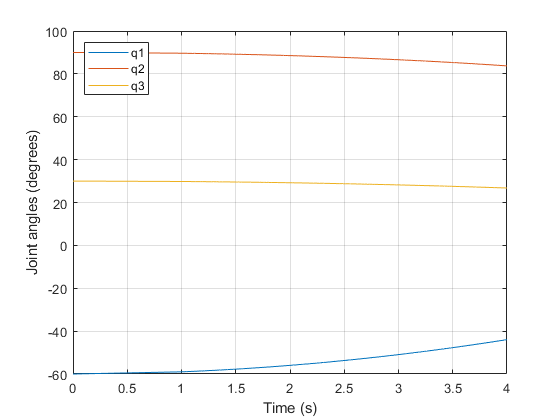
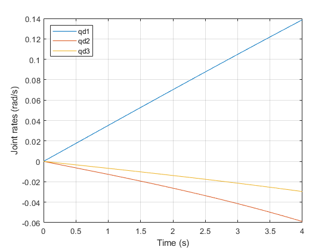

clc;
clear all;
close all;
a=[1 1 1];
l=[0.5 0.5 0.5];
m = [50 50 50];
I=[10 10 10];
kr=[90 90 90];
Im=[0.02 0.02 0.02];
th0=deg2rad([-60 90 30]);
thdot=[0 0 0];
alpha=zeros(1,3);
d=zeros(1,3);
theta=[0 0 0];
DH=[theta; d; a; alpha;m;l;I;kr;Im]'
for i=1:3
L{i}=Link('d',DH(i,2),'a',DH(i,3),'alpha',DH(i,4),'m',DH(i,5),'r',[DH(i,6);0;0],'I',eye(3)*DH(i,7),'G',DH(i,8),'Jm',DH(i,9));
end
t0=0;
for b = 1:3
X(b) = L{b};
end
n = 1:3;
m =[X(n)];
G=[0 0 1]';
R=SerialLink(m,'name','Planar_3-DOF_arm');
R.gravity=[0 0 0]';
te=1:0.001:4;
tau= @torqfun;
[t0,q,qd]=R.fdyn(te,tau,th0,thdot);
figure(1)
plot(t0,rad2deg(q));
hold on;
grid on;
xlabel('Time (s)');
ylabel('Joint angles (degrees)');
legend('q1','q2','q3','location','northwest');
figure(2)
plot(t0,qd);
hold on;
grid on;
xlabel('Time (s)');
ylabel('Joint rates (rad/s)');
legend('qd1','qd2','qd3','location','northwest');
function T=torqfun(te,q,qd,a)
T=[20, 5, 1];
end
DH =
Columns 1 through 7
0 0 1.0000 0 50.0000 0.5000 10.0000
0 0 1.0000 0 50.0000 0.5000 10.0000
0 0 1.0000 0 50.0000 0.5000 10.0000
Columns 8 through 9
90.0000 0.0200
90.0000 0.0200
90.0000 0.0200
Fast RNE: (c) Peter Corke 2002-2012
 